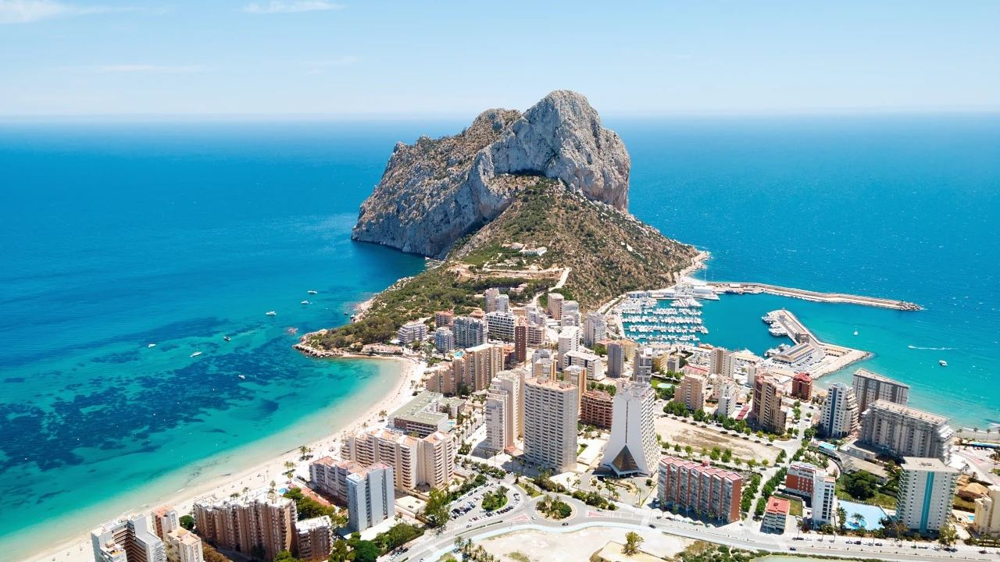
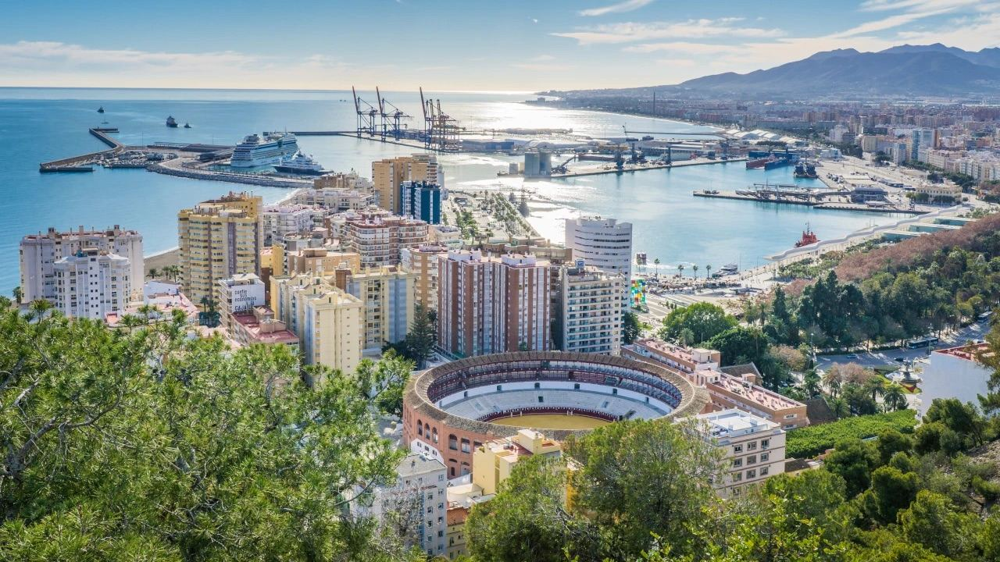
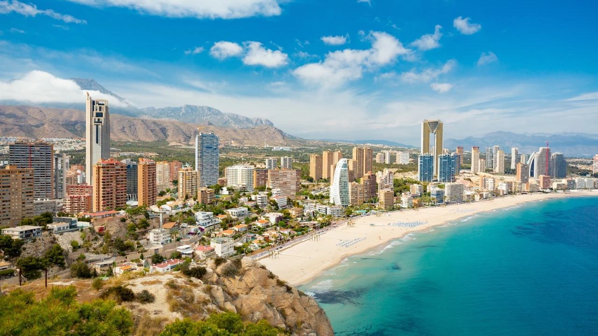
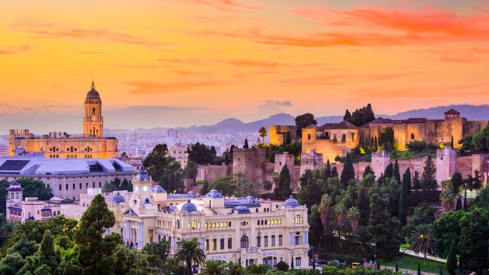
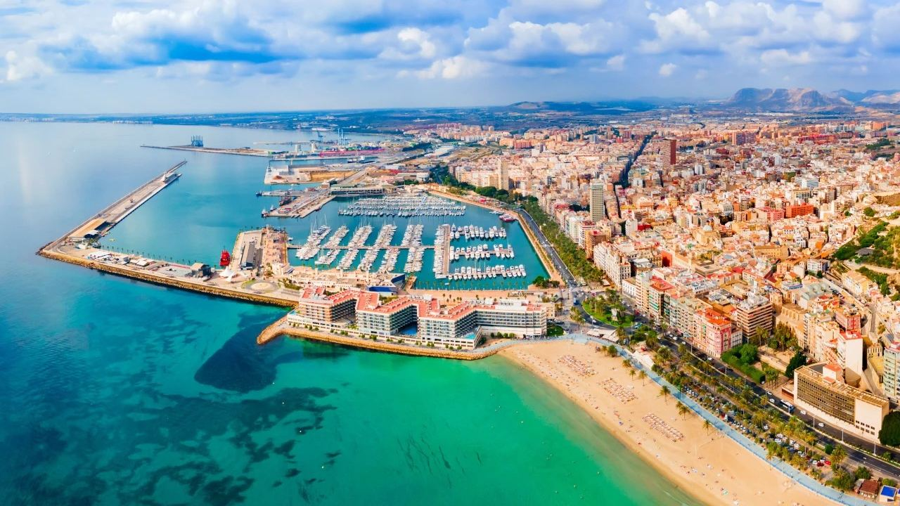

Buying in Spain · Where to buy
Costa Blanca or Costa del Sol? How the Two Coasts Compare
 By Lucyna Gacek · · updated · 3 min read
By Lucyna Gacek · · updated · 3 min read

In short: Both coasts have a mild climate, a big international airport and a good choice of homes; the difference is mostly character and price. The Costa del Sol (Málaga province, Andalusia) is more international and lively, with Marbella's luxury market, golf and marinas, and prices are higher. The Costa Blanca (Alicante province, Valencian Community) is more relaxed and varied, from the coves and villas of Jávea and Moraira in the north to the affordable sandy south around Torrevieja, and the same budget usually buys more. Purchase tax on resale homes is lower in Andalusia (7%) than in the Valencian Community (9%).
This is the first question many of our buyers ask, and the honest answer is that there is no wrong choice. Both coasts offer a high quality of life, they just offer it differently. Here is a clear comparison to help you decide.
Costa del Sol: international, lively, prestigious

The Costa del Sol runs along the coast of Málaga province, from Nerja in the east to Manilva in the west. Its best-known names are Marbella with the Golden Mile, Puerto Banús with its yachts and boutiques, Estepona with its old town, Benahavís in the hills and Málaga city itself, now a lively cultural capital.
Life here is more international and busier all year: more restaurants, beach clubs, international schools, private clinics and about 70 golf courses along the coast. The property market is led by villas in gated communities, frontline apartments and penthouses, and prices at the top end are among the highest in Spain. See La Zagaleta for the very top of the market.
Suits: buyers who want energy, prestige, golf and a social life, and families who need international schools.
Costa Blanca: relaxed, varied, better value

The Costa Blanca covers the coast of Alicante province, over 200 km from Dénia to Pilar de la Horadada. It is really several coasts in one:
- The north (Dénia, Jávea, Moraira, Benissa, Calpe, Altea): cliffs, coves, green hills, low-rise villas and some of the best sea views in Spain.
- The centre (Benidorm, Villajoyosa, Alicante city, El Campello): city life, long beaches and high-rise apartments with views.
- The south (Torrevieja, Orihuela Costa, Guardamar): long sandy beaches, salt lagoons and the most affordable seaside homes on either coast.
Suits: buyers who want peace, nature and space for their money, retirees, families and anyone who prefers a more Spanish rhythm.
Side by side
| Costa Blanca | Costa del Sol | |
|---|---|---|
| Region | Valencian Community (Alicante province) | Andalusia (Málaga province) |
| Airport | Alicante-Elche; Valencia and Murcia also within reach | Málaga; Gibraltar and Seville within reach |
| Climate | Very dry and sunny; slightly cooler winters in the north | Sunny, a little wetter in winter, very mild |
| Character | Relaxed, varied, more Spanish | International, lively, glamorous |
| Prices | Lower on average, wide range | Higher, especially Marbella and Benahavís |
| Golf | Many courses, especially in the south and around Alicante | Around 70 courses, Spain's "Costa del Golf" |
| International schools | Several, mainly around Alicante and the north | Many, especially Marbella to Málaga |
Taxes and rules that differ

Purchase and inheritance taxes are set by the regions, so the coast you choose affects your costs:
| Valencian Community | Andalusia | |
|---|---|---|
| Transfer tax (ITP), resale homes | 9% (11% above €1 million) | 7% |
| Stamp duty (AJD), new builds | 1.4% plus 10% VAT | 1.2% plus 10% VAT |
| Inheritance, spouses and children | 99% relief after a €100,000 allowance | €1 million allowance and 99% relief |
Both regions are tightening holiday-letting rules, and Málaga city has stopped new tourist-flat registrations. Read our guides to short-term rental rules and inheriting property.
Frequently asked questions
Which is cheaper, the Costa Blanca or the Costa del Sol?
On average the Costa Blanca. The southern Costa Blanca around Torrevieja has the most affordable seaside homes, while Marbella and Benahavís on the Costa del Sol are among the most expensive areas in Spain.
Which coast has better weather?
Both are mild and sunny. The Costa Blanca is drier; the Costa del Sol has slightly warmer winters but a little more rain.
Which coast is better for golf?
The Costa del Sol has around 70 courses and is known as the Costa del Golf, but the Costa Blanca also has many good courses, especially in the south.
Are purchase taxes different on each coast?
Yes. Transfer tax on resale homes is 7% in Andalusia and 9% in the Valencian Community (11% above €1 million).
Which coast is better for families?
Both work well. The Costa del Sol has more international schools; the Costa Blanca offers more space for the money and a calmer pace.
We work on both coasts

Tell us how you want to live and your budget, and we will show you the best matches on both the Costa Blanca and the Costa del Sol. Contact us, or read about buying near the sea.
Sources: AEMET – climate values for Alicante and Málaga · idealista – monthly house price reports